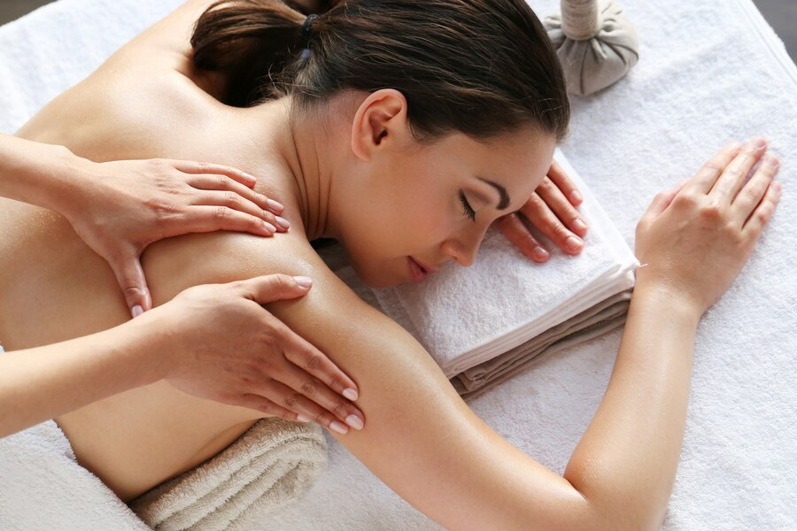
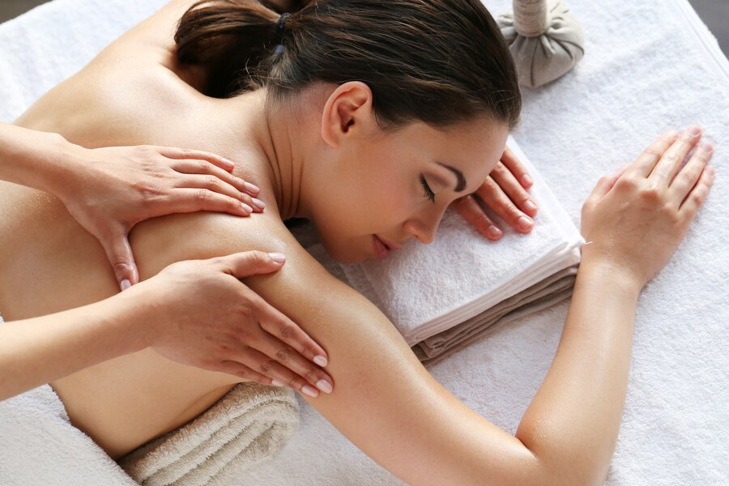

Nuestros servicios
MANICURIA TRADICIONAL
Este es un trabajo de manicuría tradicional, dónde se realiza una
higiene, repujado, pulido, hidratación, nutrición y esmaltado con
calcios, vitamina E y fortalecedores a las uñas.
BELLEZA DE MANOS Y PIES
Para la belleza de tus manos y pies, contamos con servicio de esmaltados semi permanente, uñas esculpidas (gel y acrílicas), y decoraciones en uñas.
MANICURIA INFANTIL
La manicura infantil es una opción ideal para consentir a los más pequeños.
Este tipo de manicura está enfocada en resaltar al 100% la creatividad y estilo de tu niño.
Nuestras profesionales cuidarán de sus uñas y cutículas, ofreciendo opciones de colores brillantes y diseños únicos.

DEPILACION Y MASAJES
No sólo nos ocupamos del cuidado y belleza de las uñas, además ofrecemos los servicios de depilación.
La depilación es la técnica que permite remover todo el vello de la zona a tratar.
No importa qué área sea, puede ser desde el rostro, pecho o zona íntima.
Empleamos estrictas medidas de bioseguridad e higiene con cada cliente. Por ello, puedes tener la seguridad de estar en buenas manos.
 

MANICURIA MASCULINA
Atrás han quedado los tiempos en que los hombres se veían obligados a tener las manos ásperas o las uñas desfiguradas.
Ahora los hombres acuden a salones de belleza para limarse y cortarse las uñas.
El proceso no termina, además, sin un relajante masaje que deja una sensación de suavidad y delicadeza en las manos.